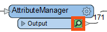
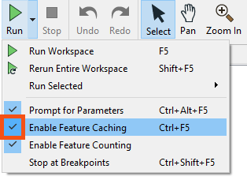
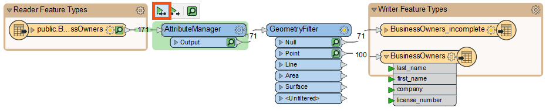
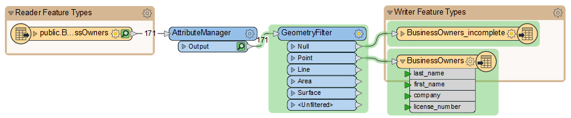

Learning Objectives
After completing this lesson, you’ll be able to:
- Inspect features at any point in your workflow with feature caching.
- Speed up workspace authoring with partial runs.
- Quickly author and debug your workspaces.
Resources
- Starting workspace
- C:\FMEData\Workspaces\IntegrateDataWithTheFMEPlatform\author-and-debug-workspaces-efficiently.fmw
- Complete workspace
- C:\FMEData\Workspaces\IntegrateDataWithTheFMEPlatform\author-and-debug-workspaces-efficiently-complete.fmw
View Your Data at Any Point in the Workspace
Jennifer has edited her data’s schema using an AttributeManager. She knows the data changed because she can see the green attribute ports showing successful schema mapping. However, Jennifer wants to see the changes to her data in Visual Preview.
Jennifer can do this using feature caching. Feature caching is an authoring mode set on the Run menu and enabled by default. When enabled, a local data cache is stored at every output port in the workspace. These caches let you view and compare data anywhere in your workspace.
Jennifer continues to work in FME Workbench (2023.0 or later). Now that she has set up her AttributeManager and run the workspace, Jennifer sees a cache on the transformer. A green magnifying glass icon indicates caches. She clicks it to open that cache in Visual Preview.


As covered in the Connect to Data course, you can also inspect caches by clicking any object with a cache (feature type or transformer) as long as Automatic Inspect on Selection is enabled. Note, however, that this inspects all the caches on that object at once. You’ll have to use the Display Control window and the drop-down menu in Table View to control which cache you are inspecting.
Feature caching is useful when you are authoring a workspace. It lets you use iterative and incremental development to add one transformer or feature type at a time, create a cache, and inspect it to confirm the data looks as you expect. It is particularly advantageous when working with web, database, or compressed data, allowing you to download, query, or extract the data once and work with a cache, saving time and effort when reading large datasets or making API calls. However, creating these caches takes time, so it’s wise to disable this mode when you want FME to run at peak efficiency.
Feature caching can be disabled by clicking the drop-down triangle next to Run to access the Run menu, then deselecting Enable Feature Caching.

Debug Your Workspace with Partial Runs
Jennifer will use another feature, partial runs, to speed up her authoring of workspaces and debug them as she works.
Partial runs allow you to run specified sections of your workspace instead of the entire thing. This feature works in tandem with feature caches to enable incremental development. When you add a new transformer or feature type, you can run that new object independently and inspect its cache for any problems. Authoring workspaces this way saves time by allowing you to detect and fix problems early.
Jennifer wants to run her workspace to ensure the AttributeManager worked properly. She could just click Run > Rerun Entire Workspace. However, as workspaces grow, running only the changed section is better. She does this by clicking the AttributeManager to select it, then clicking Run To This above the transformer. She can see what part of the workspace will run because it is highlighted in green.

The relevant section of the workspace runs. When it’s finished, Visual Preview will show the features of the AttributeManager output port. Jennifer looks at Table View to ensure the schema appears as intended. It does:

Partial runs will utilize any connected caches “upstream” (i.e., earlier in the data flow). As few transformers or feature types will run as required to carry out the partial run, saving Jennifer time. For example, if Jennifer had already run the AttributeManager, using Run To This on the GeometryFilter would use the cache from the AttributeManager.
Now that she’s confirmed the schema is correct, Jennifer wants to write the data, so she hovers over the Run button. Notice how the reader feature type is not highlighted in green. FME will use its cache instead of rereading the data. The rest of the workspace runs when she clicks Run, and FME writes her data.

Using Run from This on the GeometryFilter would have the same effect in this case, but if there were more data streams, the Run button might run more objects on the canvas. Use the green highlight to determine which parts of the workspace will run.
If Jennifer changed her workspace and wanted to update all the caches, she could choose Rerun Entire Workspace from the Run menu.
If the source database changed and she wanted to update the data, she could find the FME Training PostGIS Database [POSTGIS] Reader in the Navigator, right-click it, and select Update. When the underlying data changes, additional features matching the existing reader schema will be read in, but if the schema changes (e.g., new table, new attributes, renamed attributes, etc.), these changes will only be reflected if the reader is updated.
Exercise
Make sure you have followed along with Jennifer’s steps.